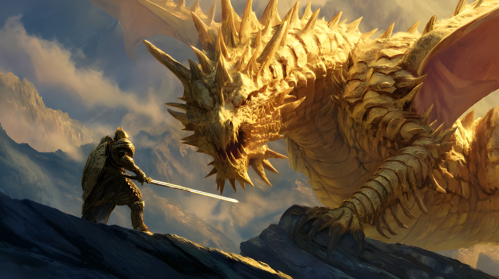

Nosso objetivo
Facilitar a organização de mesas virtuais e deixar as ferramentas essenciais mais acessíveis aos grupos.
CONHEÇA O PROJETO
Uma proposta para aproximar jogadores, mestres e histórias em um ambiente digital pensado para RPG de mesa.
NOSSA IDEIA
O Vinte Faces nasceu da ideia de reunir, em uma única plataforma, recursos que ajudam a organizar e aproveitar partidas de RPG de mesa online.
A proposta é oferecer um ambiente intuitivo no qual mestres possam estruturar suas sessões e jogadores possam preparar seus personagens e participar das aventuras.

Facilitar a organização de mesas virtuais e deixar as ferramentas essenciais mais acessíveis aos grupos.
Criatividade, colaboração, acessibilidade e liberdade para contar histórias de diferentes maneiras.
PROJETO ACADÊMICO
O Vinte Faces é desenvolvido como Projeto Integrador do curso de Desenvolvimento de Software Multiplataforma.